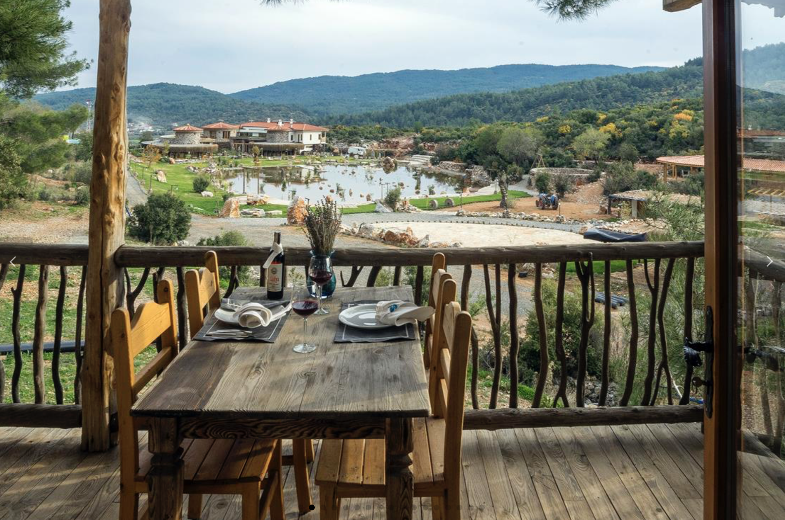
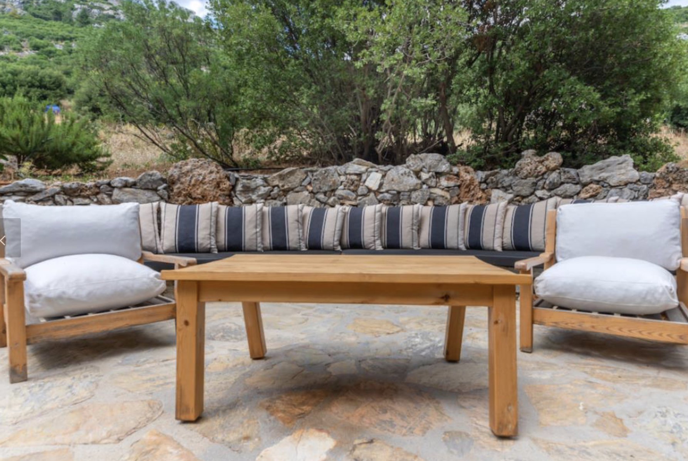
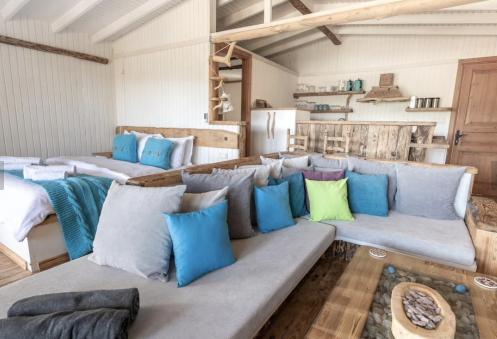
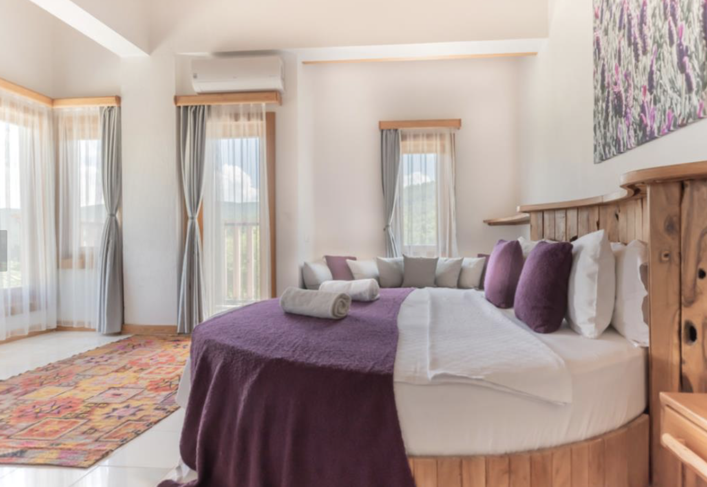

Turkey Yenice Valley
The concept of Yenice Valle grew from a love of traditional Turkish village life and the desire to sustain our natural environment. Yenice Valley has come to reality in a secluded valley, surrounded by tree-covered mountains, with accommodation built using traditional local materials, to include a treehouse, stone cottages, and a log cabin, each in plenty of space, well-furnished and fully equipped. The focal point is a stunning stone-built boutique hotel, which fits perfectly with the surrounding countryside.

Location
Yenice Vadi is located within a quiet Turkish valley, providing the perfect escape, offering superb accommodation nestled amongst trees and mountains with easy access to the coast.The valley is surrounded by an abundance of trees including pine, almond, olives and fruit trees, all of which attract a wonderful range of wildlife including birds, boars, squirrels, hares, tortoises and goats. Hiding away in the valley gives everyone a wonderful opportunity to experience nature at its best. Waking up to the sound of bird song, peaceful evenings on the verandas and exploring the amazing countryside whether on foot or by car provide the perfect sanctuary.
Many communal areas are present in the space that can be customized according to visitor's needs. It's located in Mentese, Mugla in the south of Turkey. It is 80 minutes away from two airports and close to many other Turkish coastal towns that attract digital nomads.

Amenities
Yenice Valley has 55 modern and authentic rooms. There are various room options for different audiences. In order to be as close as possible to traditional Turkish village life, the valley includes organically grown vegetables, with a greenhouse to lengthen the season. At various times of the year you will find tomatoes, peppers, aubergines, okra, broccoli, cabbage, onions and spinach to name but a few! The development has their own special olive oil is pressed from the harvest of our family owned olive grove.

Gallery









Financials
: TODO: complete